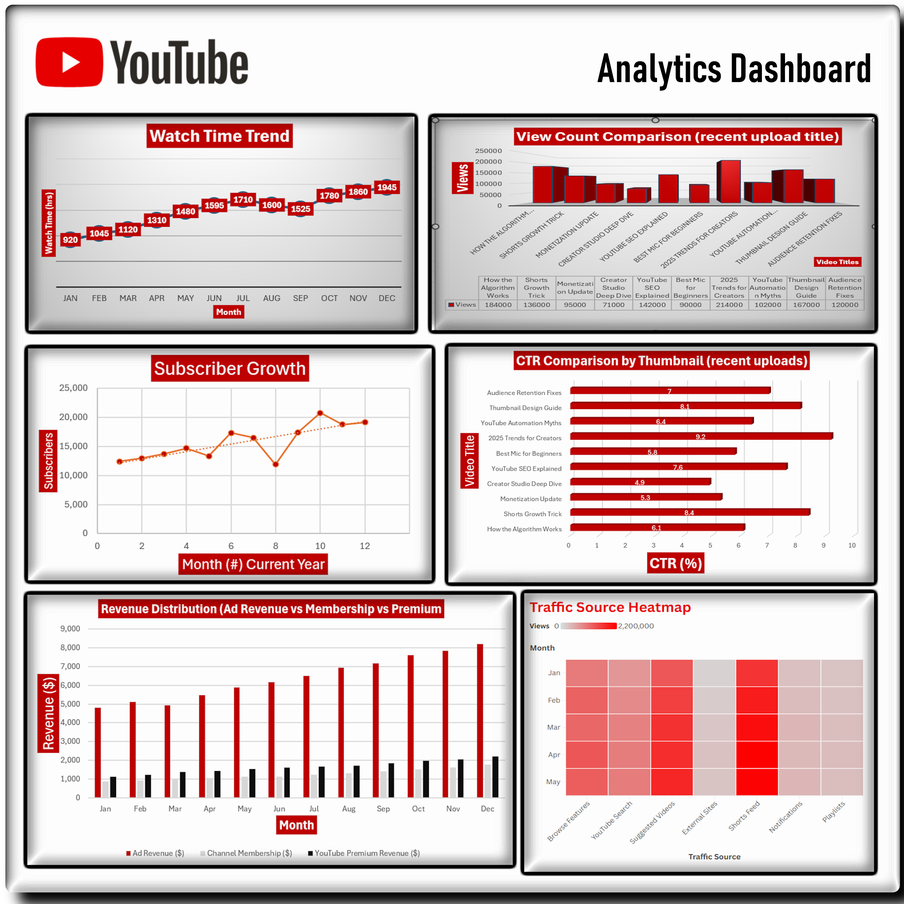

QA & Web Analytics Coursework.
Where my testing and analytical foundations began.
Original coursework in quality assurance and web analytics, from test planning and defect reports to KPIs, dashboards and stakeholder communications.

Context matters.
The Quality Assurance coursework follows sample applications through requirements, test plans, execution and defects. Web Analytics explores measurement, visualization, privacy and decision support.
Original deliverable files are preserved in their academic folders. This website is a presentation layer only.
What I did.
Quality assurance practice
Write requirements, plans, manual tests, defect reports and process analyses.
Web analytics practice
Evaluate data and KPIs across education, finance, social media and website scenarios.
Documentation
Describe the purpose of each deliverable and the skills it demonstrates.
How I tested it.
Understand the scenario and intended outcomes
Document requirements or analytical goals
Perform testing or data analysis
Present findings for technical and nontechnical readers
Inspect the work.
These are authentic project artifacts and source links, not illustrative sample reports.

What it shows.
The academic work provides context for my approach to test design, quality reporting, data interpretation and communication.